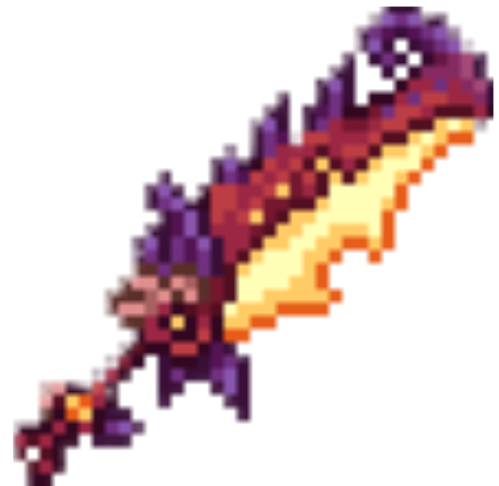
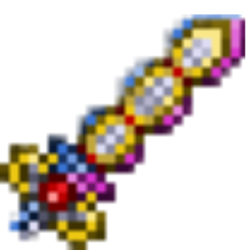

Мод Calamity — это качественный и насыщенный дополнительный контент для Террарии, который обогатит игровой опыт многими часами развлечения, а также предоставит множество новых врагов и боссов, распределенных по всему прохождению игры.
Подробнее